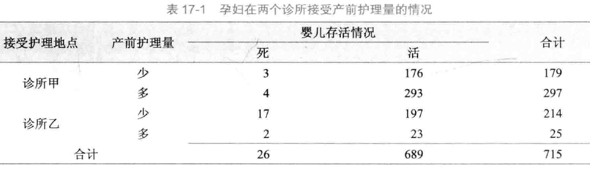

# 不考虑护理地点的影响，就是2*2列联表
M <- matrix(c(20,373,6,316),nrow = 2, byrow = T,
dimnames = list(`产前护理量`=c("少","多"),
`存活情况`=c("死","活")))
M
## 存活情况
## 产前护理量 死 活
## 少 20 373
## 多 6 316
# 进行卡方检验
chisq.test(M,correct = F)
##
## Pearson's Chi-squared test
##
## data: M
## X-squared = 5.2555, df = 1, p-value = 0.0218822 多维列联表的对数线性模型
在一些生物医学研究中，很多时候反应变量不符合正态分布的假设，或者反应变量为属性变量或离散型变量，往往需要借助于广义线性模型（generalized linea rmodel）的分析方法。广义线性模型是一般线性模型的直接推广，在广义线性模型中，因变量可以是连续型的资料也可以是离散型资料，如正态分布、二项分布、泊松分布等。在广义线性模型中因变量的总体均值经过函数转换与自变量的线性预测值建立联系。因变量总体均值的转换函数称作连接函数（link function），连接函数为单调可微（连续且充分光滑）的函数。常用的广义线性模型有对数线性模型、logistic回归模型、Probit回归模型、Poisson回归模型、负二项回归模型等。本章着重介绍对数线性模型。
对数线性模型（log-linear model）多用于列联表资料的分析。是将列联表资料中各个格子理论频数的自然对数表示为分类变量以及分类变量之间的交互作用的线性模型。在对数线性模型中，连接函数为自然对数，要对反应变量的总体均数（理论频数）进行自然对数转换。应用对数线性模型对列联表资料进行分析时，所有变量均为因变量，即不区分因变量和自变量，模型的假设检验通过分析列联表单元格的实际频数和理论频数差异的大小进行推断，从而分析变量之间的相互联系。对数线性模型是列联表资料分析方法的拓展，应用于二维及二维以上多维列联表资料的分析，卡方检验用于二维列联表资料的分析，不能分析二维以上列联表中变量的关系。
22.1 对数线性模型和卡方检验
孙振球医学统计学第4版例17-1。研究产前护理量对婴儿死亡率的影响，收集了甲乙两家医院的资料，此资料由分类变量X（产前护理量）、Y（婴儿是否存活）、Z（接受护理地点）构成的2×2×2三维列联表，X为行变量、Y为列变量、Z为分层变量。资料见表17-1，试对此资料中3个变量的关系进行分析。

对表17-1资料中的产前护理量与接受护理地点和婴儿存活情况进行卡方检验，如果不考虑接受护理地点的影响，对产前护理量和婴儿存活情况分别合并后得到（Χ2=5.255，P=0.022），即产前护理量与婴儿存活情况有关联：
如果考虑接受护理地点的影响，分别对两个诊所进行假设检验时却发现产前护理量与婴儿存活情况是没有关联的，即基于接受护理地点的条件下产前护理量与婴儿存活情况没有关联：
# 诊所甲
M1 <- matrix(c(3,176,4,293),nrow = 2, byrow = T,
dimnames = list(`产前护理量`=c("少","多"),
`存活情况`=c("死","活")))
M1
## 存活情况
## 产前护理量 死 活
## 少 3 176
## 多 4 293
# 进行卡方检验
chisq.test(M1,correct = F)
## Warning in chisq.test(M1, correct = F): Chi-squared approximation may be
## incorrect
##
## Pearson's Chi-squared test
##
## data: M1
## X-squared = 0.083522, df = 1, p-value = 0.7726# 诊所乙
M2 <- matrix(c(17,197,2,23),nrow = 2, byrow = T,
dimnames = list(`产前护理量`=c("少","多"),
`存活情况`=c("死","活")))
M2
## 存活情况
## 产前护理量 死 活
## 少 17 197
## 多 2 23
# 进行卡方检验
chisq.test(M2,correct = F)
## Warning in chisq.test(M2, correct = F): Chi-squared approximation may be
## incorrect
##
## Pearson's Chi-squared test
##
## data: M2
## X-squared = 9.6186e-05, df = 1, p-value = 0.9922这是因为产前护理量和接受护理地点之间不是独立的（Χ2=173.372，P<0.001），这个例子说明由于接受护理量不是一个独立的变量，故对二维以上的列联表资料不能通过简单合并的方法进行卡方检验。
# 产前护理量和护理地点之间的独立性检验
M3 <- matrix(c(179,297,214,25),nrow = 2, byrow = T,
dimnames = list(`产前护理量`=c("少","多"),
`护理地点`=c("甲","乙")))
M3
## 护理地点
## 产前护理量 甲 乙
## 少 179 297
## 多 214 25
# 进行卡方检验
chisq.test(M3,correct = F)
##
## Pearson's Chi-squared test
##
## data: M3
## X-squared = 173.37, df = 1, p-value < 2.2e-16在列联表17-1中有8个格子，总频数715分布于这8个格子中，假设在列联表资料中，这种分布是随机变量，那么在总样本量、行合计、列合计、层合计均固定时，我们可以通过这种多项分布建立模型，描述变量之间的关系。这就是我们要着重介绍的列联表对数线性模型，将每个格子的期望频数的自然对数与分类变量之间建立线性联系，分析分类变量之间的关系。具体统计分析过程包括建立对数线性模型、拟合优度检验及参数估计。
22.2 对数线性模型的概念
对数线性模型为层次模型，如果模型中包含了某几个变量的高阶交互效应项时，这几个变量的低阶交互效应项与主效应项也一定包含在模型中。对数线性模型的建立一般以饱和模型（saturated model）)开始，饱和模型包含了所有变量的主效应、低阶交互效应和高阶交互效应项。通过后退法逐渐排除没有统计学意义的作用项，最后拟合最优的简化模型即不饱和模型（unsaturated model）。
22.3 2*2列联表
孙振球医学统计学第4版例17-2。一项蒙古族高血压危险因素的研究中得到性别和血压的关系数据，此数据由分类变量X（性别）、Y（是否高血压）构成的2×2二维列联表。试分析蒙古族高血压危险因素研究中性别和血压的关系。
data17_2 <- haven::read_sav("datasets/例17-02.sav",encoding = "GBK")
#str(data17_2)
data17_2 <- haven::as_factor(data17_2)
str(data17_2)
## tibble [4 × 3] (S3: tbl_df/tbl/data.frame)
## $ 性别: Factor w/ 2 levels "男性","女性": 1 1 2 2
## $ 血压: Factor w/ 2 levels "正常血压","高血压": 1 2 1 2
## $ 频数: num [1:4] 579 485 1032 483
## ..- attr(*, "format.spss")= chr "F8.0"
data17_2
## # A tibble: 4 × 3
## 性别 血压 频数
## <fct> <fct> <dbl>
## 1 男性 正常血压 579
## 2 男性 高血压 485
## 3 女性 正常血压 1032
## 4 女性 高血压 483先改变一下格式，变成矩阵：
M <- matrix(data17_2$频数,nrow = 2,byrow = T,
dimnames = list(trt = c("男性", "女性"),
effect = c("正常","高血压")))
M
## effect
## trt 正常 高血压
## 男性 579 485
## 女性 1032 483这个其实是2维列联表，你用卡方检验也可以的：
chisq.test(M,correct = F)
##
## Pearson's Chi-squared test
##
## data: M
## X-squared = 50.046, df = 1, p-value = 1.502e-12从卡方检验的结果来看性别和血压是独立的。
下面做对数线性模型，直接使用R语言自带的loglin函数：
fm <- loglin(M, margin=list(1,2), fit=T, param=T)
## 2 iterations: deviation 0
fm$lrt # 查看似然比G^2^
## [1] 49.84297
fm$pearson # 查看卡方值
## [1] 50.04632
1 - pchisq(fm$lrt, fm$df) # 计算似然比G^2^的P值
## [1] 1.665557e-12
1 - pchisq(fm$pearson, fm$df) # 计算卡方的P值
## [1] 1.501577e-12似然比统计量G2和pearson-x2都和课本一样，P值小于0.0001。
也可以使用MASS包中的loglm拟合对数线性模型，可以使用公式的形式，结果也更加简洁易懂：
library(MASS)
# 不饱和模型（没有交互项）
f <- loglm(`频数` ~ `性别` + `血压`, data = data17_2)
f
## Call:
## loglm(formula = 频数 ~ 性别 + 血压, data = data17_2)
##
## Statistics:
## X^2 df P(> X^2)
## Likelihood Ratio 49.84297 1 1.665557e-12
## Pearson 50.04632 1 1.501577e-12如果要对饱和模型进行拟合优度检验，可以使用以下代码：
f1 <- update(f, ~ .^2) # 直接更新模型
anova(f, f1) # 比较饱和模型和不饱和模型
## LR tests for hierarchical log-linear models
##
## Model 1:
## 频数 ~ 性别 + 血压
## Model 2:
## 频数 ~ 性别 + 血压 + 性别:血压
##
## Deviance df Delta(Dev) Delta(df) P(> Delta(Dev)
## Model 1 49.84297 1
## Model 2 0.00000 0 49.84297 1 0
## Saturated 0.00000 0 0.00000 0 1当然你不更新模型，直接拟合一个饱和模型也是可以的：
# 或者重新拟合一个饱和模型
f2 <- loglm(`频数` ~ `性别` * `血压`, data = data17_2)
anova(f,f2) # 比较饱和模型和不饱和模型
## LR tests for hierarchical log-linear models
##
## Model 1:
## 频数 ~ 性别 + 血压
## Model 2:
## 频数 ~ 性别 * 血压
##
## Deviance df Delta(Dev) Delta(df) P(> Delta(Dev)
## Model 1 49.84297 1
## Model 2 0.00000 0 49.84297 1 0
## Saturated 0.00000 0 0.00000 0 1结果和课本是一致的。G2=49.843，P值<0.0001，说明饱和模型和简化模型（没有交互项的模型）有显著性差异，简化模型不能取代饱和模型，确定最终模型为饱和模型。
如何计算OR值？可以使用glm函数拟合模型，然后根据系数计算：
f3 <- glm(`频数` ~ `性别` * `血压`, data = data17_2, family = poisson())
#f3
coef(f3) # 查看系数
## (Intercept) 性别女性 血压高血压 性别女性:血压高血压
## 6.3613025 0.5779515 -0.1771536 -0.5820837
exp(-0.5820837) # 计算OR值
## [1] 0.5587329除此之外，还可以使用Crosstabs.Loglinear包中的LOGLINEAR函数拟合对数线性模型，给出的信息超级全面，而且格式和SPSS类似，更容易观看：
library(Crosstabs.Loglinear)
LOGLINEAR(data = data17_2,
data_type = "counts",
variables = c("性别","血压"),
Freq = "频数")
# 给出的结果，太全面了！
The input data:
血压
性别 正常血压 高血压
男性 579 485
女性 1032 483
K - Way and Higher-Order Effects
K df LR Chi-Square p Pearson Chi-Square p AIC
1 3 291.135 0 319.455 0 326.153
2 1 49.843 0 50.046 0 88.860
0 0 0.000 1 0.000 1 41.017
These are tests that K - Way and Higher-Order Effects are zero, i.e., tests
of the hypothesis that Kth-order and higher interactions are zero
If these effects and all higher order effects are removed from the model,
then here are the consequences.
The df values indicate the number of effects (model terms) that are removed.
The first row, labeled as 1, shows the consequences of removing all of the main
effects and all higher order effects (i.e., everything) from the model. This
usually results in poor fit. A statistically significant chi-square indicates
that the prediction of the cell frequencies is significantly worse than the
prediction that is provided by the saturated model. It would suggest that at
least one of the removed effects needs to be included in the model.
The second row, labeled as 2, shows the consequences of removing all of the
two-way and higher order effects from the model, while keeping the main effects.
A statistically significant chi-square indicates a reduction in prediction success
compared to the saturated model and that at least one of the removed effects needs
to be included in the model.
The same interpretation process applies if there is a K = 3 row, and so on.
A K = 3 row in the table would show the consequences of removing all of the
three-way and higher order effects from the model, while keeping the two-way
interactions and main effects.
A nonsignificant chi-square for a row would indicate that removing the
model term(s) does not significantly worsen the prediction of the cell
frequencies and the term(s) is nonessential and can be dropped from the model.
The bottom row in the table, labeled as 0, is for the saturated mode. It
includes all possible model terms and therefore provides perfect prediction
of the cell frequencies. The AIC values for this model can be helpful in
gaging the relative fit of models with fewer terms.
K-Way Effects
K df LR Chi-Square p Pearson Chi-Square p AIC diff.
1 2 241.292 0 269.409 0 237.292
2 1 49.843 0 50.046 0 47.843
These are tests that the K - Way Effects are zero, i.e., tests whether
interactions of a particular order are zero. The tests are for model
comparisons/differences. For each K-way test, a model is fit with and then
without the interactions and the change/difference in chi-square and
likelihood ratio chi-square values are computed.
For example, the K = 1 test is for the comparison of the model with
all main effects and the intercept with the model with only the intercept.
A statistically significant K = 1 test is (conventionally) considered to
mean that the main effects are not zero and that they are needed in the model.
The K = 2 test is for the comparison of the model with all two-way
interactions, all main effects, and the intercept with the model with
the main effects, and the intercept. A statistically significant K = 2 test
is (conventionally) considered to mean that the two-way interactions are
not zero and that they are needed in the model.
The K = 3 test (if there is one) is for the comparison of the model
with all three-way interactions, all two-way interactions, all main
effects, and the intercept with the model with all two-way interactions,
all main effects, and the intercept. A statistically significant K = 3 test
is (conventionally) considered to mean that the three-way interactions
are not zero and that they are needed in the model, and so on.
The df values for the model comparisons are the df values associated
with the K-way terms.
The above "K - Way and Higher-Order Effects" and "K - Way" tests are for the
ncollective importance of the effects at each value of K. There are not tests
nof individual terms. For example, a significant K = 2 test means that the set
nof two-way terms is important, but it does not mean that every two-way term is
significant.
Partial Associations:
Effect LR.Chi.Square df p AIC.diff.
1
2 性别 79.275 1 0 77.275
3 血压 162.017 1 0 160.017
These are tests of individual terms in the model, with the restriction that
higher-order terms at each step are excluded. The tests are for differences
between models. For example, the tests of 2-way interactions are for the
differences between the model with all 2-way interactions (and no higher-order
interactions) and the model when each individual 2-way interaction is removed in turn.
Parameter Estimates (SPSS "Model Selection", not "General", Parameter Estimates):
For saturated models, .500 has been added to all observed cells:
Estimate Std. Error z value p CI_lb CI_ub
(Intercept) 6.417 0.021 310.767 0 6.377 6.458
性别1 -0.143 0.021 -6.943 0 -0.184 -0.103
血压1 0.234 0.021 11.328 0 0.193 0.274
性别1:血压1 -0.145 0.021 -7.043 0 -0.186 -0.105
Backward Elimination Statistics:
Step GenDel Effects LR_Chi_Square df p AIC
0 Generating Class 性别:血压 0 0 1 41.017
Deleted Effect 性别:血压 49.843 1 0 88.86
The hierarchical backward elimination procedure begins with all possible
terms in the model and then removes, one at a time, terms that do not
satisfy the criteria for remaining in the model.
A term is dropped only when it is determined that removing the term does
not result in a reduction in model fit AND if the term is not involved in any
higher order interaction. On each Step above, the focus is on the term that results
in the least-significant change in the likelihood ratio chi-squre if removed.
If the change is not significant, then the term is removed.
The Final Model Formula:
Freq ~ 性别 + 血压 + 性别:血压
The Final Model Goodness-of-Fit Tests:
df LR Chi-Square p Pearson Chi-Square p AIC
0 0 1 0 0 41.017
Generalized Linear Model Coefficients for the Final Model:
Estimate Std. Error z value Pr(>|z|)
(Intercept) 6.361 0.042 153.068 0.000
性别女性 0.578 0.052 11.131 0.000
血压高血压 -0.177 0.062 -2.878 0.004
性别女性:血压高血压 -0.582 0.083 -7.044 0.000
Cell Counts and Residuals:
性别 血压 Obsd. Freq. Exp. Freq. Residuals Std. Resid. Adjusted Resid.
1 男性 正常血压 579 579 0 0 0
3 男性 高血压 485 485 0 0 0
2 女性 正常血压 1032 1032 0 0 0
4 女性 高血压 483 483 0 0 022.4 R*C表
孙振球医学统计学第4版例17-3。比较3种方剂治疗胃溃疡的效果，将200名病情类似的患者随机分到3个治疗组，疗效如下。试分析3个方剂的治疗效果有无差别。
data17_3 <- haven::read_sav("datasets/例17-03.sav",encoding = "GBK")
data17_3 <- haven::as_factor(data17_3)
str(data17_3)
## tibble [6 × 3] (S3: tbl_df/tbl/data.frame)
## $ 治疗方法: Factor w/ 3 levels "甲方剂","乙方剂",..: 1 1 2 2 3 3
## $ 治疗效果: Factor w/ 2 levels "有效","无效": 1 2 1 2 1 2
## $ 频数 : num [1:6] 42 18 38 27 56 19
## ..- attr(*, "format.spss")= chr "F8.0"
data17_3
## # A tibble: 6 × 3
## 治疗方法 治疗效果 频数
## <fct> <fct> <dbl>
## 1 甲方剂 有效 42
## 2 甲方剂 无效 18
## 3 乙方剂 有效 38
## 4 乙方剂 无效 27
## 5 丙方剂 有效 56
## 6 丙方剂 无效 19直接使用loglm函数拟合对数线性模型：
# 拟合不饱和模型
f <- loglm(`频数` ~ `治疗方法`+`治疗效果`,data = data17_3)
f
## Call:
## loglm(formula = 频数 ~ 治疗方法 + 治疗效果, data = data17_3)
##
## Statistics:
## X^2 df P(> X^2)
## Likelihood Ratio 4.310314 2 0.1158850
## Pearson 4.359917 2 0.1130462进行拟合优度检验：
f1 <- update(f, ~ .^2) # 饱和模型
anova(f,f1) # 拟合优度检验
## LR tests for hierarchical log-linear models
##
## Model 1:
## 频数 ~ 治疗方法 + 治疗效果
## Model 2:
## 频数 ~ 治疗方法 + 治疗效果 + 治疗方法:治疗效果
##
## Deviance df Delta(Dev) Delta(df) P(> Delta(Dev)
## Model 1 4.310314 2
## Model 2 0.000000 0 4.310314 2 0.11588
## Saturated 0.000000 0 0.000000 0 1.00000这个结果也是和课本一致的，似然比G2=4.31，p值=0.1159，不拒绝H0，简化模型可以取代饱和模型。
22.5 三维列联表
孙振球医学统计学第4版例17-4。Vandenbroucke等人采用病例对照研究，研究避孕药与Fcator-V-Leiden等位基因在静脉血栓发生中的作用。共调查324人，其中病例155人，对照169人。试对避孕药与基因的交互作用进行分析。
data17_4 <- haven::read_sav("datasets/例17-04.sav",encoding = "GBK")
data17_4 <- haven::as_factor(data17_4)
str(data17_4)
## tibble [8 × 4] (S3: tbl_df/tbl/data.frame)
## $ 人群分组 : Factor w/ 2 levels "病例组","对照组": 1 1 1 1 2 2 2 2
## $ 口服避孕药暴露水平: Factor w/ 2 levels "暴露","未暴露": 1 1 2 2 1 1 2 2
## $ 基因型 : Factor w/ 2 levels "突变型","野生型": 1 2 1 2 1 2 1 2
## $ 频数 : num [1:8] 25 84 10 36 2 63 4 100
## ..- attr(*, "format.spss")= chr "F8.0"
data17_4
## # A tibble: 8 × 4
## 人群分组 口服避孕药暴露水平 基因型 频数
## <fct> <fct> <fct> <dbl>
## 1 病例组 暴露 突变型 25
## 2 病例组 暴露 野生型 84
## 3 病例组 未暴露 突变型 10
## 4 病例组 未暴露 野生型 36
## 5 对照组 暴露 突变型 2
## 6 对照组 暴露 野生型 63
## 7 对照组 未暴露 突变型 4
## 8 对照组 未暴露 野生型 100下面就是建立饱和模型和多个不饱和模型，书中介绍了4种不饱和模型：
- 无二阶交互效应的模型
- 条件独立模型
- 联合独立模型
- 完全独立模型
然后借助SAS对饱和模型进行逐步筛选，并根据BIC和G2选择最终模型。
我们先建立饱和模型和几个不饱和模型（并没有完全按照书中来，太麻烦了，不嫌麻烦的可以自己逐个列出来）。
library(MASS)
# 无交互项，只有主效应，完全独立模型
f1 <- loglm(`频数` ~ `人群分组`+`口服避孕药暴露水平`+`基因型`,data = data17_4)
# 添加1阶交互效应，即只有两个变量的交互，没有3变量交互
f2 <- update(f1, ~ .^2)
# 添加2阶交互效应，即饱和模型，既有两变量交互，又有3变量交互
f3 <- update(f1, ~ .^3)下面使用逐步回归法对饱和模型进行筛选，使用的指标的AIC(AIC和BIC类似，也是值越小说明模型拟合效果越好)：
f <- step(f3, direction = "both")
## Start: AIC=16
## 频数 ~ 人群分组 + 口服避孕药暴露水平 + 基因型 +
## 人群分组:口服避孕药暴露水平 + 人群分组:基因型 +
## 口服避孕药暴露水平:基因型 + 人群分组:口服避孕药暴露水平:基因型
##
## Df AIC
## - 人群分组:口服避孕药暴露水平:基因型 1 14.096
## <none> 16.000
##
## Step: AIC=14.1
## 频数 ~ 人群分组 + 口服避孕药暴露水平 + 基因型 +
## 人群分组:口服避孕药暴露水平 + 人群分组:基因型 +
## 口服避孕药暴露水平:基因型
##
## Df AIC
## - 口服避孕药暴露水平:基因型 1 12.097
## <none> 14.096
## + 人群分组:口服避孕药暴露水平:基因型 1 16.000
## - 人群分组:基因型 1 37.909
## - 人群分组:口服避孕药暴露水平 1 42.920
##
## Step: AIC=12.1
## 频数 ~ 人群分组 + 口服避孕药暴露水平 + 基因型 +
## 人群分组:口服避孕药暴露水平 + 人群分组:基因型
##
## Df AIC
## <none> 12.097
## + 口服避孕药暴露水平:基因型 1 14.096
## - 人群分组:基因型 1 38.751
## - 人群分组:口服避孕药暴露水平 1 43.762
f # AIC最小的模型
## Call:
## loglm(formula = 频数 ~ 人群分组 + 口服避孕药暴露水平 +
## 基因型 + 人群分组:口服避孕药暴露水平 + 人群分组:基因型,
## data = data17_4, evaluate = FALSE)
##
## Statistics:
## X^2 df P(> X^2)
## Likelihood Ratio 0.09702652 2 0.9526447
## Pearson 0.09561789 2 0.9533159结果得到的最终模型和书中是一样的：
频数 ~ 人群分组 + 口服避孕药暴露水平 + 基因型 + 人群分组:口服避孕药暴露水平 + 人群分组:基因型可以再比较一下饱和模型和AIC最小的这个模型：
anova(f3,f)
## LR tests for hierarchical log-linear models
##
## Model 1:
## 频数 ~ 人群分组 + 口服避孕药暴露水平 + 基因型 + 人群分组:口服避孕药暴露水平 + 人群分组:基因型
## Model 2:
## 频数 ~ 人群分组 + 口服避孕药暴露水平 + 基因型 + 人群分组:口服避孕药暴露水平 + 人群分组:基因型 + 口服避孕药暴露水平:基因型 + 人群分组:口服避孕药暴露水平:基因型
##
## Deviance df Delta(Dev) Delta(df) P(> Delta(Dev)
## Model 1 0.09702652 2
## Model 2 0.00000000 0 0.09702652 2 0.95264
## Saturated 0.00000000 0 0.00000000 0 1.00000结果显示似然比G2=0.097，P值=0.095（就是上面f的结果），简化模型可以取代饱和模型。